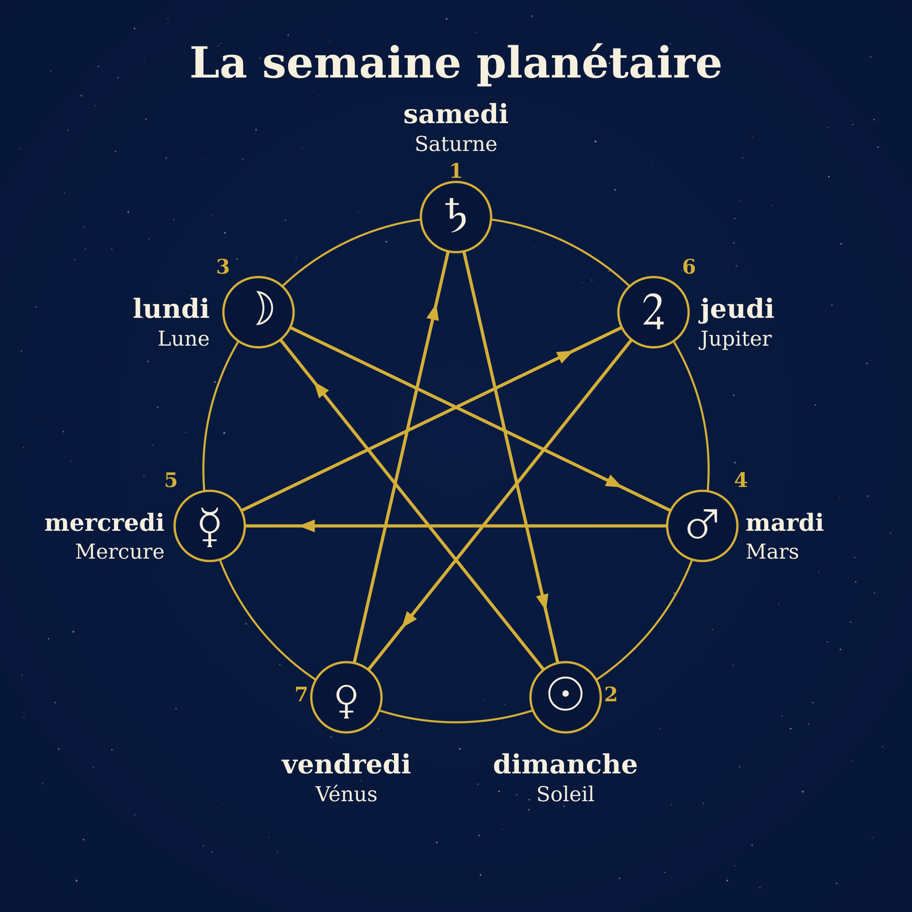
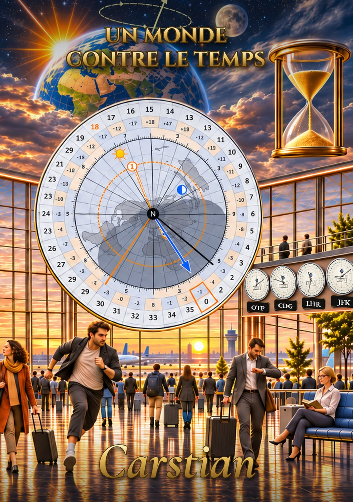

Pourquoi les jours et les mois portent-ils ces noms ?
Le calendrier TPU a des semaines nettes et des mois de 28 jours qui commencent un lundi. Les noms que nous donnons aux jours et aux mois viennent pourtant d’un calendrier bien plus ancien et cachent deux énigmes : pourquoi les jours se suivent dans l’ordre lundi, mardi, mercredi, et pourquoi décembre, douzième mois, signifie « dix ».
Pourquoi les jours de la semaine se suivent-ils dans cet ordre ?
Lundi est le jour de la Lune, mardi celui de Mars, mercredi celui de Mercure, jeudi celui de Jupiter, vendredi celui de Vénus. Ce sont cinq des sept corps que les Anciens voyaient se déplacer parmi les étoiles fixes. Les deux autres, le Soleil et Saturne, se reconnaissent encore en anglais, dans Sunday et Saturday.
Les Anciens connaissaient un ordre des astres, du plus lent au plus rapide dans le ciel : Saturne, Jupiter, Mars, le Soleil, Vénus, Mercure, la Lune. Or, en commençant par le samedi, notre semaine est Saturne, le Soleil, la Lune, Mars, Mercure, Jupiter, Vénus. Les deux suites ne se ressemblent pas, pas même à l’envers.
La réponse vient d’un calcul. Les Anciens ne consacraient pas des astres seulement aux jours, mais aussi aux heures : on commençait par la première heure de Saturne, la deuxième de Jupiter, la troisième de Mars, et ainsi de suite, en cycle, et le jour prenait le nom de l’astre qui gouvernait sa première heure. Le jour compte 24 heures et les astres sont sept : 24 = 3 × 7 + 3 (d’après nos calculs). Après trois cycles complets, il reste trois heures ; la première heure du jour suivant tombe donc trois places plus loin dans la suite. À chaque fois, on saute deux astres et l’on tombe sur le troisième : de Saturne au Soleil, du Soleil à la Lune, puis Mars, Mercure, Jupiter, Vénus. Cela donne samedi, dimanche, lundi, mardi, mercredi, jeudi, vendredi, c’est-à-dire exactement l’ordre que nous connaissons.

La semaine planétaire : les sept astres sont placés sur le cercle du plus lent au plus rapide, dans le sens des aiguilles d’une montre, à partir de Saturne ; la ligne qui les relie de trois en trois donne l’ordre des jours, du samedi (1) au vendredi (7).
Personne n’a donc jamais décidé de cet ordre : il est sorti d’une division avec reste. L’étoile à sept branches n’est qu’une manière de voir le même calcul. L’historien romain Dion Cassius, au IIIᵉ siècle, dit que l’usage de consacrer les jours aux sept astres vient des Égyptiens et que les anciens Grecs ne l’avaient pas compris ; il retient deux explications, l’une musicale et l’autre par les heures, et toutes deux mènent au même pas de trois. On ne peut pas dire avec certitude si le système des heures a précédé les noms des jours ou s’il est venu les expliquer.
Deux jours ont toutefois été réécrits. En français, samedi vient du sabbat juif (en latin sabbatum) et dimanche de dies dominica, « le jour du Seigneur » : là où les Romains avaient le jour du Soleil, les chrétiens ont mis le jour du Seigneur. L’anglais a fait le choix inverse : il a gardé les noms du Soleil, de la Lune et de Saturne et a remplacé quatre dieux romains par des dieux germaniques, d’où Tuesday ou Thursday. En 321, l’empereur Constantin a fait du jour du Soleil un jour de repos dans tout l’Empire ; le décret l’appelle pourtant toujours le jour du Soleil, de sorte que le changement de nom est venu progressivement.
La semaine est donc une convention ancienne, faite de trois choses : le ciel donne les noms, l’arithmétique donne l’ordre, et la religion a réécrit deux jours.
Pourquoi décembre, douzième mois, porte-t-il un nom qui signifie « dix » ?
Septembre, octobre, novembre et décembre viennent des mots latins pour sept, huit, neuf et dix, mais ils sont les neuvième, dixième, onzième et douzième mois. L’explication se trouve dans la tradition romaine : l’année aurait d’abord compté dix mois et commencé en mars (c’est ainsi qu’Ovide la présente dans les Fastes, avec Mars premier mois et Vénus deuxième). Janvier et février auraient été ajoutés plus tard, et tous les numéros ont ainsi glissé de deux rangs sans que les noms changent.
| Mois actuel | Mot latin | Sens | Rang dans l’année de dix mois (à partir de mars) | Rang aujourd’hui |
|---|---|---|---|---|
| juillet (Quintilis, puis Iulius) | quintus | cinquième | 5 | 7 |
| août (Sextilis, puis Augustus) | sextus | sixième | 6 | 8 |
| septembre | septem | sept | 7 | 9 |
| octobre | octo | huit | 8 | 10 |
| novembre | novem | neuf | 9 | 11 |
| décembre | decem | dix | 10 | 12 |
Deux de ces mois ont même changé de nom. Le cinquième mois (Quintilis) a reçu le nom de Jules César en 44 av. J.-C., d’après Macrobe par une loi proposée par Marcus Antonius, et le sixième (Sextilis) celui d’Auguste en 8 av. J.-C., par une décision du Sénat.
On raconte aussi une histoire : Auguste aurait pris un jour à février pour que son mois ne soit pas plus court que juillet. Les textes antiques que nous avons lus ne la confirment pas : Censorinus et Macrobe disent que César a ajouté des jours aux mois courts, deux à janvier, août et décembre et un aux autres, et Macrobe précise que février n’a reçu aucun jour ; août comptait donc déjà 31 jours du temps de César. Les sources modernes ne s’accordent pas toutes ; c’est donc une histoire sans appui dans une source antique.
Qu’est-ce que cela change pour le calendrier de 13 mois ?
Le calendrier TPU garde la semaine de sept jours et les noms des jours, mais lui donne un cadre net : 13 mois de 28 jours, soit exactement quatre semaines, chaque mois commençant un lundi. Les mois peuvent se nommer par des numéros (mois 1 … mois 13), précisément pour que les noms ne restent plus en arrière des rangs, comme « décembre » reste en arrière de sa place de douzième mois.
La semaine ne suit aucun cycle du ciel : c’est une convention, mais une convention qui a une histoire d’arithmétique et d’astres, et cela ne se perd pas.
Plus dans le livre
Le sujet occupe deux chapitres d’Un monde contre le temps, de Carstian : le chapitre 11 (le jour de la semaine et l’étoile à sept branches) et le chapitre 14 (les mois romains et leurs noms), avec les notes et les sources antiques. Le site est un bonus du livre : ici vous trouvez le schéma, et dans le livre les explications.

Sources antiques lues
Dion Cassius, Histoire romaine, 37.18–19 · Ovide, Fastes, livres 1 et 3 · Censorinus, De die natali · Macrobe, Saturnales, 1.12–14. La liste complète figure dans la bibliographie du livre.